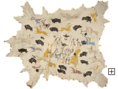
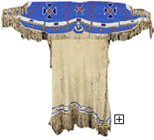

|

|
|
Development of Art
As more efficient hunters, the Plains people had more time to devote to making art.
The Plains art of the 18th and 19th centuries grew out of their nomadic lifestyle. Because
they were constantly moving to new hunting areas, their art, like their other belongings,
had to be portable. The everyday objects of their lives provided surfaces for rich decoration.
|
 |
 |
|
Attributed to Cadzi Cody, Wind River Shoshone, Great Plains region (United States), Wyoming, Wind River Reservation, Scenes of Plains Indian Life, about 1900, Elk hide with pigment, Gift of Bruce Dayton, 85.92
Men painted representational scenes on their robes, shields, and tipis. |
Northern Plains region, Lakota, Woman's Dress, 20th century, Leather, cotton, copper & glass beads, Gift of James David & John David 74.64.5
Women embroidered clothing with glass beads and porcupine quills and painted
geometric designs on hide containers.
|
The People Today
Conditions were very difficult for Plains people in the 20th century. In spite of this,
many have struggled to preserve their traditions. Today over 20,000
Lakota
people live on the two adjoining
reservations of Pine Ridge and Rosebud in South Dakota, and many others
live in urban and rural areas throughout the Midwest. Plains people have a renewed interest
in practicing their ancient traditions, generating a flowering of Native American culture
and spirituality, language, music, visual arts and business enterprises. They continue to
speak their Native languages and to tell their own stories. The Sun Dance, which is their
most sacred ceremony, is once again held annually during the summer in many areas of the
Plains.
Tribal Web Sites
Comanche web site: http://www.comanchenation.com/
Pawnee web site: http://www.pawneenation.org/
|